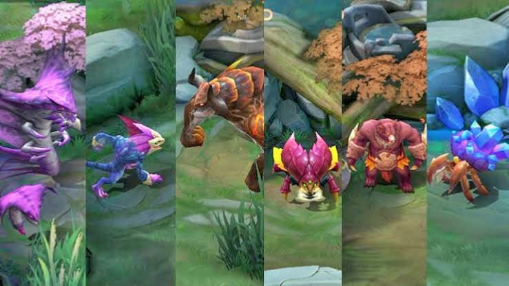

The next step to improving is understanding the map. Knowing the map gives you an advantage in outplaying your enemy and helps communication with the team.
In Mobile Legends, the map has a Exp Lane, Gold Lane, Mid Lane and Jungle areas.
Exp Lane is the lane where you can gain massive ammount of experience to help you level up fast this lane suits best for fighters because fighters is strong in middle game which help the mage to buy more time for marksman to build items.
Gold Lane is the lane where you can gain a large amount of gold to help you buy items to be more strong this lane is the bes lane for marksman because marksman is an item defendant hero which mean the more it has item the more it can deal high and continuous damage.
Middle Lane is a busy lane where the most of battle is happening it is the best lane for Mages and Tank. Mages is strong in early game which means can take down heroes or deal massive damage in enemy team even it is low level. Tanks sustained damage and protect mages in the middle lane.
Jungle Area is very dangerous because you have no vision in the area and it is the area where enemy teams hide and the way to ambush different lanes and this is the place where the Assassins shine because we all know that assassin is very sneaky and fast and this areas is suits best for it because it can hide , hunt and ambush.
Minions and Cart this are the monster that you can see in the lanes that helps the hero to take down towers of enemy team
Jungle Monster this monsters are the color green dot in the minimap this is the monster where the Assassins gets his resources only the hero with jungle item can take down this kind of monsters fast and easy
Buff Monster this type of monster has two type the blue buff monster and the red buff monster. If you kill the Blue one it gives you a reduction of mana cost and cooldown reduction for skills this buff suits best for Mages. If you kill the Red one it gives you a true damage and also slows down the enemy if it is hit this buff is more likely to be acquired by Marksman or Assassins
Gold Crab this monsters is spawning in the river and if you kill it, it gives you a 10 gold per second in 1 minute
LithoWonderer this is a useful monster that will give you a movement speed if you take this down it spawn in the middle of the river
Turtle gives a shield to the hero that killed it which increases their Physical Attack and Magic Power. Magic Power is increased more than Physical Attack. Also gives the entire team who killed it a large amount of exp and gold.
Lord, killing it will aslo give the team who killed it a exp and gold just like the turle. When the Lord is killed, he will be summoned from the side that killed it. The Lord will charge down the lane with the least amount of turrets or turret HP and attack anything in its way, while enhancing the minion waves on all three lanes. After the 12 minutes mark, the Lord will turn into a Luminous Lord which gains the ability to use a charging skill on the first turret it encounters, dealing true damage and disabling the turret for a few seconds.
